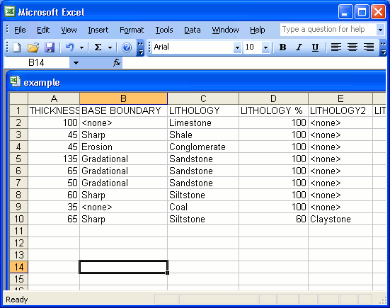

Create
a log by importing a CSV file
SedLog takes as input data files containing the sediment data in CSV
format. CSV (or comma-separated values; also known as a comma-separated
list or comma-separated variables) file format is a file type that
stores tabular data. It is a delimited text file data format that has
fields/columns separated by the comma character and records/rows
separated by newlines. Fields that contain a special character (comma,
newline, or double quote), must be enclosed in double quotes. The CSV
file format does not require a specific character encoding, byte order,
or line terminator format making it platform independent. Bellow is a
sample CSV file opened by a text editor:
"THICKNESS
(CM)","BASE BOUNDARY","LITHOLOGY","LITHOLOGY %","GRAIN SIZE
BASE","GRAIN SIZE TOP","SYMBOLS IN BED"
100,"","Limestone",100,"vf","vf","Intense bioturbation"
45,"Sharp","Shale",100,"clay","clay",""
45,"Erosion","Conglomerate",100,"pebble","granule","Cephalopods"
135,"Gradational","Sandstone",100,"vc","m","Trough cross bedding"
65,"","Sandstone",100,"m","m","Planar cross bedding"
50,"","Sandstone",100,"f","f","Current ripple cross-lamination"
60,"Sharp","Siltstone",100,"silt","silt","" 35,"","Coal",100,"","",""
65,"Sharp","Siltstone",60,"clay/silt","clay/silt","Moderate
bioturbation"
CSV
files can be created or opened by any spreadsheet
application such as Microsoft Excel, OpenOffice.org Calc, Corel Quattro
Pro, etc. When you are creating an input data file for SedLog using a
spreadsheet application such as MS Excel make sure to save it in CSV
format using the Save As option not the default one. The CSV format
does not store information such as column width, colour, etc, so when
you will try to save a spreadsheet to CSV format the spreadsheet
application will warn you that you will loose some information saving
it in CSV format. Don’t worry about it, proceed and save it
as
CSV. Below (see Figure 1) you can see a screenshot of a CSV
file opened in Microsoft Excel:

Figure
1. A CSV
file opened in MS Excel
To import a CSV file,
choose from the menu import a log from a CSV
file. A dialog box (see Figure 2) will appear. If the CSV file you want
to import
has been generated by SedLog choose Automatic
Importing.
Automatic importing will import all the columns in the CSV file. If the
CSV
file was created by another application such MS Excel or you want to
select which column to import from the CSV file choose Custom
Importing. Using Custom
Importing
one can select which columns are to
be selected for import and these columns can be assigned then to the
corresponding log columns.

Figure
2. Importing a CSV
file to
SedLog
In the Imported
Columns list box on the left
of the dialog box are displayed the headers of the columns of the
imported CSV. Click on
the Imported Columns
list box to select which column from the CSV file you want to import. Then use the Assign Imported Column To
combo box on the top right of the dialog box to assign the imported
column to the corresponding SedLog's log column. Only the columns
present at the Assigned Columns
box at the bottom right of the dialog box are going to be imported.
See Also
Creating a log from scratch
Data export into other programs